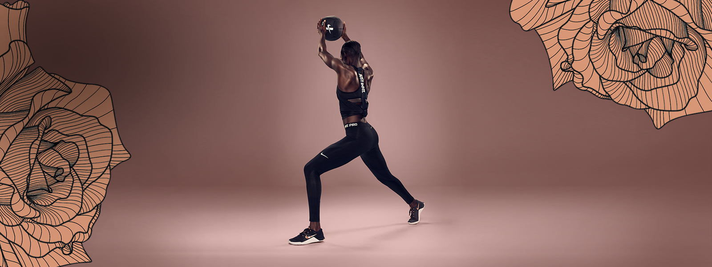
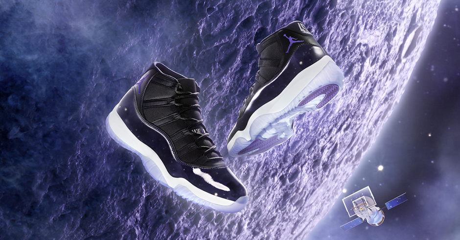
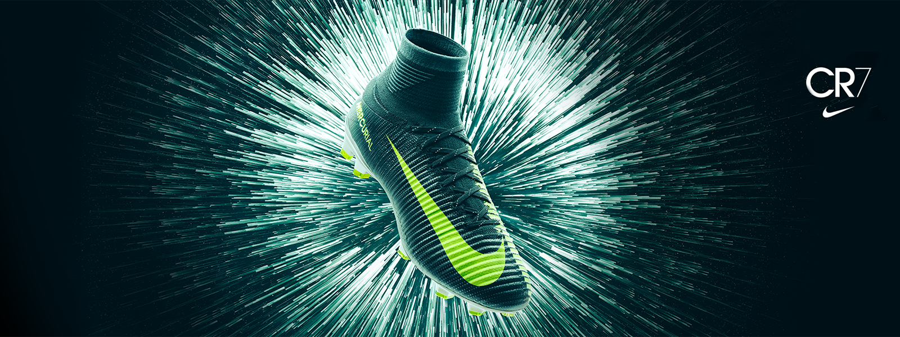
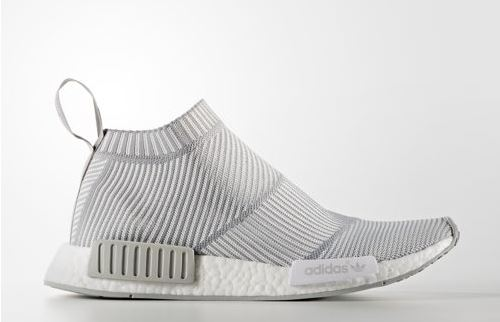

우리는 다양한 제품들을 선보이고 있습니다.
이 제품들은 순수한 실리콘 카보네이트로 본체를 이루고 있고 섬세한 제조 공정을 거쳐 탄생하였습니다.
어떠한 충격과 화학성분에도 데미지를 입지 않으며 마법을 쓰듯이 가볍게 이동 시킬 수 있습니다.

흄후드
흄후드는 애플리케이션 개발부터, 테스트, 오픈, 운영, 안정화의 전 단계에 걸쳐 애플리케이션의 성능을 모니터링하고 분석할 수 있습니다. 주요 기능은 서비스 및 리소스에 대한 실시간 및 장애 분석, 통계 데이터 분석, 보고서 작성 등이 있습니다.
자세히 보기
암후드
암후드는 마소의 닷넷 프레임워크 2.0 기반의 응용 프로그램을 최소한의 부하로 실시간 모니터링을 할 수 있으며, 운영 시스템에 동작 중인 응용 프로그램의 즉각적인 성능 장애 진단 및 장애 대응이 가능합니다.
자세히 보기
후드 모터
후드 모터는 운영 중인 PHP 웹 환경의 성능을 직관적으로 모니터링 할 수 있을 뿐 아니라,PHP 환경에서의 모든 트랜잭션과 인프라에 대한 정확하고 심층적인 상세 정보를 통해 안정적이고 직관적인 실시간 모니터링 환경을 제공합니다.
자세히 보기